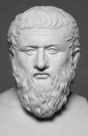
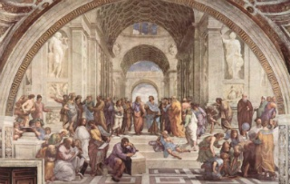

서양의 고대철학은 주로 고대 그리스 및 로마의 철학을 총칭합니다.
서양의 철학은 B.C 6세기 그리스의 밀레토스 학파로부터 시작되어 이오니아인의 도시에서 성장하여,
아테네에서 그 전성기를 누렸기 때문입니다.
고대 서양 철학은 가장 잘 알려진 철학자들인 소크라테스, 플라톤, 아리스토텔레스와 그들을 계승하는 철학자들,
그리고 세속적인 부와 명예를 중시한 소피스트의 큰 두 줄기로 나누어집니다.
그 외에도 수학자로 더 잘 알려진 피타고라스 역시 고대 철학자에 속하는 자연 철학자입니다.
소크라테스는 고대 그리스 철학의 전성기를 이룩한 대표적인 철학자입니다.
비록 직접 저술한 저서가 없어 소크라테스의 철학은 그의 제자들의 기록으로부터 유추할 수밖에 없지만,
그의 철학 사상은 철학사에서 아주 중요하게 여겨집니다.
소크라테스는 상대가 제시하는 의견에 논리적이고 이성적인 물음을 계속 제기하는 문답법(산파술)을 통한 진리의 깨달음,
무지에 대한 자각을 통한 참된 앎, 그리고 이러한 앎과 덕의 일치를 중시하였습니다.

플라톤(Plato)
“교육이 한 인간을 양성하기 시작할 때의 방향이
훗날 그의 삶을 결정할 것이다”
BC 427 ~ BC 347
소크라테스의 제자
주요 저서 『국가』
플라톤은 소크라테스, 아리스토텔레스와 함께 고대 그리스의 대표적인 철학자입니다.
최초로 학교를 설립한 사람으로도 알려져 있는 플라톤의 사상은 이데아 세계관이 대표적입니다.
이데아는 사물의 불변하는 본질이자 참된 실재로서 완전한 것을 의미합니다.
각각의 모든 사물에는 사물마다 고유한 이데아가 존재하며, 이데아에 대한 지식은 이성을 통해서만 얻을 수 있습니다.
인간은 그 중 선(善)의 이데아를 인식하여 참된 진리의 세계에 도달할 수 있다고 합니다.
그 외에도 플라톤은 철학자가 정치하는 철인 정치의 실현을 주장하였습니다.
플라톤은 선의 이데아에 대한 지혜를 갖춘 철학자가 국가를 다스려야 한다고 보았습니다.
소피스트(Sophist)
“인간은 만물의 척도이다” /프로타고라스
“아무 것도 없다. 만약 있다고 해도 알 수 없다.
만약 있고 알 수 있다고 해도 다른 사람에게 분명하게 말할 수 없다” /고르기아스

소피스트는 BC 5세기부터 4세기까지 그리스에서 활동한 철학자 겸 교사 집단입니다.
소피스트들은 각 소피스트들의 관점이 다소 차이를 보이나
일반적으로 소피스트들의 사상은 자연이 아닌 인간 중심적이며,
현실적인 활용과 세속적인 이해관계를 중시합니다.
또한 인간 사고가 불완전하다고 여겼으며 바람직한 삶의 태도나 윤리, 공동체의 사회규범 역시
보편적이지 않고 상대적이라고 주장합니다.
또한 설득의 도구로서의 언어를 중시하였습니다. 따라서 그들은 웅변술과 수사학에 능통하였습니다.